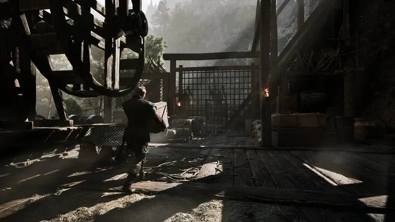
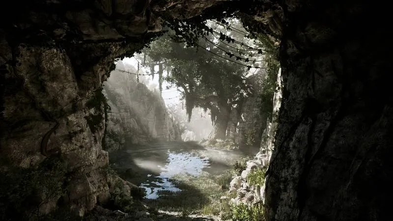
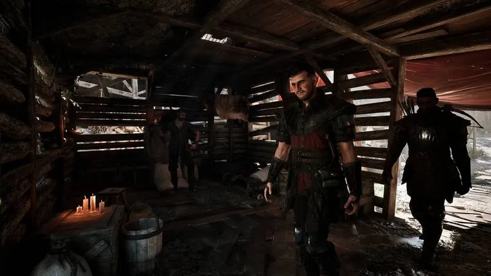
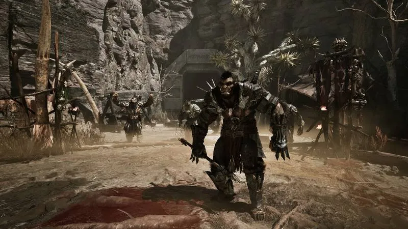
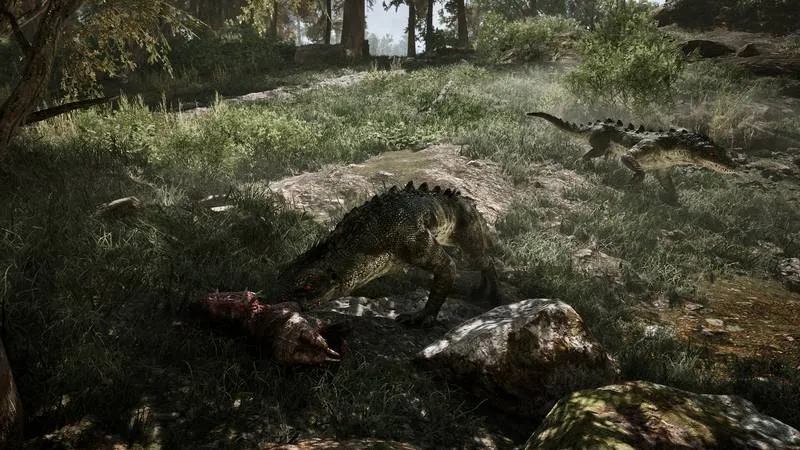
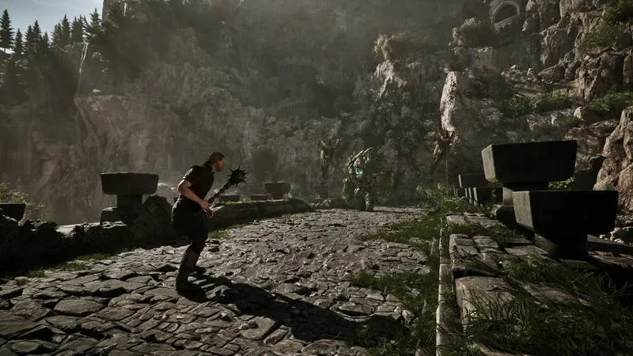
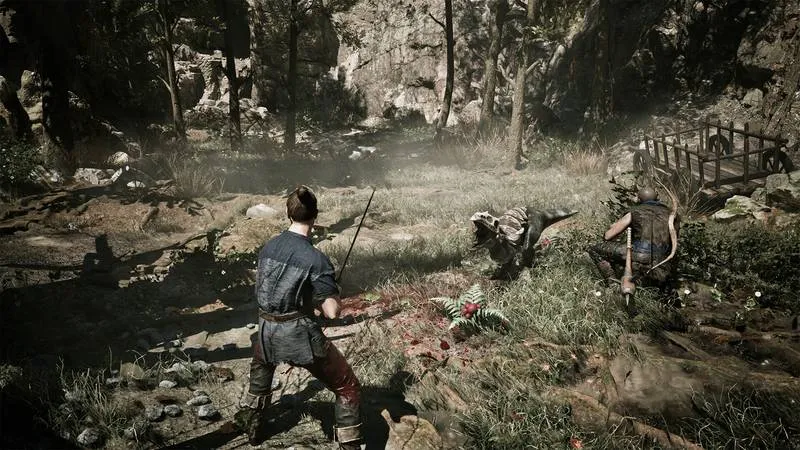
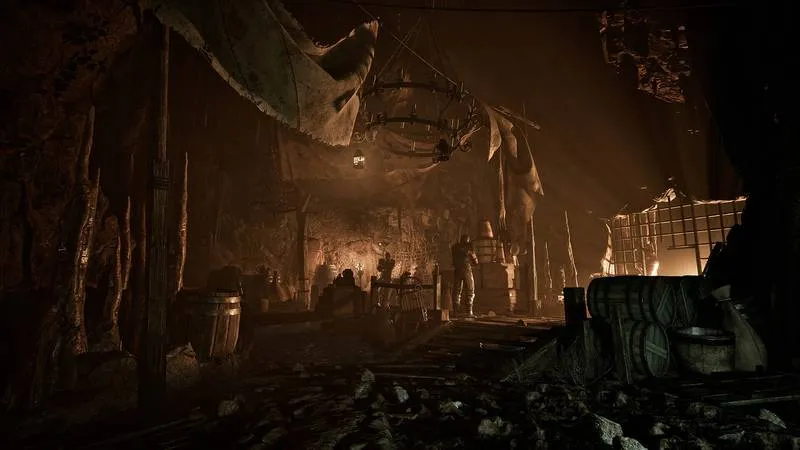
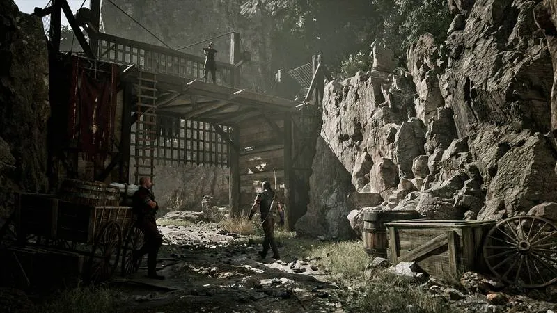
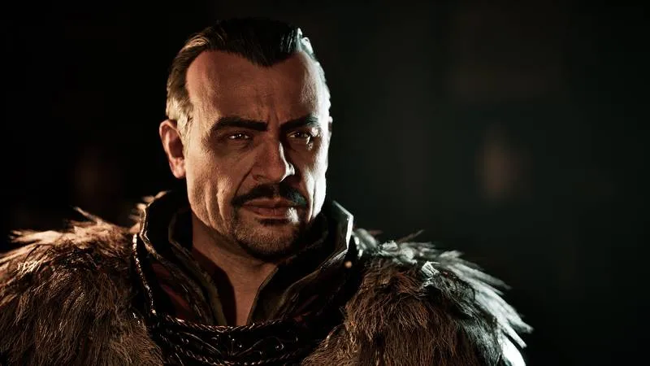

📖 Bestiary
Every creature — weaknesses, tactics, drops

Combat Readiness by Level
Levels 1-3
Avoid all combat. Pick herbs, run from everything.
Levels 4-6
Scavengers, juvenile wolves, lone molerats. Still avoid packs.
Levels 7-10
Most wildlife manageable. Shadowbeasts and orcs remain lethal.
Levels 10+
Most enemies fair game. Bosses need preparation.
Damage Type Reference
| Type | Strong Against | Weak Against |
|---|---|---|
| Fire | Undead, Shadowbeasts, Trolls, Minecrawlers, Bloodflies | Fire Lizards, Fire Demons |
| Piercing | Wolves, Scavengers, Bloodflies | Skeletons, Minecrawlers |
| Blunt | Skeletons, Minecrawlers, Molerats | — |
| Slashing | Goblins, Snappers, Wargs | Minecrawlers, Skeletons |
| Silver/Blessed | Undead, Shadowbeasts, Orc Elite | — |
📊 Complete Bestiary Stats — All 70 Creatures
Verified post-launch values. Weakness = the damage type this creature defends against least (use it). Source: colony-guide.com creature database.
| Creature | XP | HP | STR | DEX | Weakness | Location |
|---|---|---|---|---|---|---|
| Biter | 120 | 120 | 80 | 80 | Fire/Wind/Ice | Mine Valley caves |
| Black Goblin | 120 | 80 | 50 | 50 | Wind/Ice | Mine Valley goblin cave |
| Bloodfly | 70 | 50 | 30 | 30 | Piercing | Swamp Camp |
| Bloodhound | 220 | 160 | 90 | 90 | Wind/Ice | Mine Valley |
| Bridge Golem | 500 | 1000 | 100 | 100 | Blunt | Mine Valley highlands |
| Dam Lurker | 140 | 90 | 40 | 40 | Wind/Ice/Energy | New Camp |
| Demon Lord | 500 | 1200 | 120 | 120 | Wind/Ice/Energy | Sleeper Temple, Sunken Tower |
| Fire Demon | 500 | 1000 | 120 | 120 | Wind/Ice/Energy | Sleeper Temple inner sanctum |
| Fire Golem | 1000 | 400 | 60 | 150 | Ice/Energy | Mine Valley, Xardas Tower |
| Fire Lizard | 500 | 250 | 80 | 80 | Ice | Mine Valley |
| Frost Shadowbeast | 400 | 600 | 150 | 150 | Fire | Mine Valley north mountains |
| Goblin | 60 | 40 | 20 | 20 | Fire/Wind/Ice | — |
| Goblin Warrior | 150 | 105 | 90 | 20 | Wind/Ice | Mine Valley |
| Great Fire Lizard | 1000 | 500 | 160 | 160 | Ice | Mine Valley, Xardas Tower |
| Great Shadowbeast | 1000 | 1000 | 275 | 275 | Wind/Ice | Stonehenge, Mine Valley |
| Great Troll | 2000 | 1000 | 160 | 20 | Wind/Ice/Energy | Troll Canyon |
| Harpy | 200 | 250 | 50 | 85 | Fire | Mine Valley |
| High Temple Guardian | 400 | 750 | 100 | 100 | Wind/Ice/Energy | Sleeper Temple, Mine Valley |
| Ice Golem | 1000 | 500 | 60 | 150 | Fire | Mine Valley, Xardas Tower |
| Lesser Demon | 500 | 500 | 100 | 75 | Wind/Ice/Energy | Sleeper Temple, Mine Valley |
| Lizard | 80 | 80 | 40 | 40 | Fire/Wind/Ice | Mine Valley caves |
| Lurker | 170 | 90 | 50 | 50 | Wind/Ice | Mine Valley lake |
| Mad Demon | — | 1500 | 150 | 150 | Wind/Ice/Energy | Sleeper Temple (Ch 6) |
| Meat Bug | 10 | 10 | 1 | — | — | Mine Valley |
| Minecrawler | 130 | 200 | 120 | 30 | Fire/Wind/Ice/Energy | Sleeper Temple, Old Mine, Mine Valley |
| Minecrawler Nymph | 70 | 40 | 40 | 30 | Wind/Ice/Energy | — |
| Minecrawler Queen | 130 | 600 | 80 | 30 | Fire | Old Mine |
| Minecrawler Tyrant | 500 | 455 | 170 | 159 | Wind/Ice/Energy | Free Mine |
| Minecrawler Warrior | 220 | 200 | 75 | 70 | Wind/Ice/Energy | Mine Valley |
| Molerat | 50 | 35 | 8 | 8 | Piercing/Fire/Wind/Ice | Mine Valley caves, Old Mine |
| Orc Blacksmith | 250 | 200 | 60 | 50 | Piercing | — |
| Orc Clan Warrior | 350 | 250 | 65 | 50 | Wind/Ice/Energy | Orc Graveyard, Mine Valley |
| Orc Fighter | 250 | 210 | 55 | 50 | Wind/Ice/Energy | Mine Valley |
| Orc Hound | 120 | 160 | 80 | 80 | Wind/Ice | Mine Valley |
| Orc Hunter | 220 | 200 | 40 | 40 | Wind/Ice/Energy | Old Camp castle, Mine Valley |
| Orc Peasant | 220 | 200 | 50 | 50 | Wind/Ice/Energy | — |
| Orc Scout | 210 | 200 | 37 | 40 | Wind/Ice/Energy | — |
| Orc Shaman | 500 | 200 | 100 | 100 | Sword/Blunt/Piercing | Mine Valley |
| Orc Slave | 100 | 250 | 90 | 20 | Wind/Ice/Energy | Mine Valley |
| Orc Temple Warrior | 400 | 300 | 75 | 50 | Wind/Ice/Energy | Old Camp castle, Mine Valley |
| Orc Warrior | 300 | 230 | 60 | 50 | Wind/Ice/Energy | Old Camp castle, Mine Valley |
| Razor | 200 | 180 | 70 | 110 | Wind/Ice | Mine Valley caves |
| Scavenger | 80 | 120 | 30 | 10 | Fire/Wind/Ice | Mine Valley caves, lake |
| Shadowbeast | 400 | 400 | 110 | 110 | Wind/Ice | Old Camp, Monastery ruins, Stonehenge |
| Skeleton | 250 | 300 | 80 | 30 | Energy | Sleeper Temple, Fog Tower, Mine Valley |
| Skeleton Mage | 500 | 300 | 8 | 30 | Blunt/Fire/Wind/Ice/Energy | Sleeper Temple, Fog Tower, Sunken Tower |
| Skeleton Scout | 300 | 300 | 120 | 30 | Blunt | Sleeper Temple, Sunken Tower, Mine Valley |
| Skeleton Warrior | 300 | 300 | 120 | 30 | Blunt | Sleeper Temple, Sunken Tower, Mine Valley |
| Sleeper | — | 9999 | 9999 | 9999 | — | Sleeper Temple (final boss) |
| Snapper | 220 | 160 | 80 | 80 | Fire/Wind/Ice | Mine Valley caves, chasm |
| Stone Golem | 500 | 1000 | 100 | 100 | — | Old Camp castle, Mine Valley, Xardas Tower |
| Swamp Shark | 400 | 1700 | 300 | 140 | Wind/Ice/Energy | Swamp Camp |
| Swampshark Mother | 500 | 500 | 180 | 180 | Wind/Ice/Energy | Swamp Camp |
| Templar | 500 | 250 | 70 | 65 | — | Sleeper Temple |
| Temple Guardian | 250 | 700 | 90 | 90 | Wind/Ice/Energy | Sleeper Temple, Mine Valley |
| Temple Minecrawler | 250 | 600 | 120 | 120 | Wind/Ice/Energy | Sleeper Temple |
| Troll | 2000 | 1000 | 160 | 20 | Wind/Ice/Energy | Mine Valley |
| Tundra Wolf | 290 | 300 | 110 | 40 | Fire | — |
| Undead Orc | 250 | 300 | 42 | 30 | Wind/Ice/Energy | Abandoned Mine |
| Varrag Arushat | 10000 | 1000 | 100 | 100 | Wind/Ice/Energy | Sleeper Temple |
| Varrag Hashor | 8000 | 1000 | 100 | 100 | Wind/Ice/Energy | Sleeper Temple |
| Varrag Kasorg | 8000 | 1500 | 100 | 100 | Wind/Ice/Energy | Sleeper Temple |
| Varrag Ruuushk | 8000 | 1000 | 100 | 100 | Wind/Ice/Energy | Sleeper Temple |
| Varrag Unhilqt | 8000 | 1000 | 100 | 100 | Wind/Ice/Energy | Sleeper Temple |
| Wolf | 90 | 80 | 40 | 40 | Fire/Wind/Ice | Mine Valley |
| Xardas's Demon | 500 | 500 | 100 | 75 | Wind/Ice/Energy | Xardas Tower |
| Young Molerat | 40 | 28 | 6 | 6 | Piercing/Fire/Wind/Ice | Mine Valley |
| Young Scavenger | 40 | 30 | 6 | 6 | Fire/Wind/Ice/Energy | Mine Valley goblin cave |
| Young Troll | 1000 | 500 | 80 | 10 | Wind/Ice/Energy | Monastery ruins |
| Zombie | 200 | 268 | 140 | 140 | Sword/Blunt/Energy | Stonehenge, Sunken Tower, Mine Valley |
📚 Beasts of Khorinis (5 bestiary books): bring all five to Cavalorn (hut west of Old Camp) to learn trophy-harvesting skills free — completing all five earns 2,450 XP and saves up to 1,250 ore in trainer fees. The last book grants the Anatomaniac achievement. Sell trophies to Fisk at Old Camp — he pays double.
Creature Database
🦅 Scavenger
< div class="difficulty-easy">Level 1+Weakness: Piercing, Blunt. Wait for peck animation, dodge back, counter 2-3 hits. Tutorial enemy. Drops: feathers, raw meat.
🐗 Molerat
<
div class="difficulty-easy">Level 1+Weakness: Blunt, Fire. Slowest enemy — charge attack has a full second wind-up. Perfect for practicing dodge timing. Drops: molerat teeth, raw meat.
🐺 Wolf
< div class="difficulty-easy">Level 3+ (packs deadly below 5)
div class="difficulty-easy">Level 3+ (packs deadly below 5)Weakness: Fire, Piercing. Never fight a pack. Pull one at a time — creep forward, retreat when one aggros. Dodge sideways. Packs of 3-5 are fatal below level 5. Drops: wolf skin, raw meat, wolf claws (Torrez quest).
👹 Goblin
<
div class="difficulty-easy">Level 4+Weakness: Fire, Piercing, Slashing. Weak alone but always in groups of 3-5. Kill one, switch targets immediately. Two swings then long pause — counter during the pause. Drops: goblin trinkets, small ore.
🦟 Bloodfly
<
div class="difficulty-easy">Level 5+Weakness: Fire, Piercing. Hard to hit with swords — use bow or wait for dive. Fire magic one-shots them. Found near swamps. Can poison. Drops: bloodfly wings.
🦎 Field Raider (pre-release name, not in final roster)
<
div class="difficulty-medium">Level 6+Weakness: Piercing, Fire. Ambush predator in tall grass — watch for movement. Aggressive, doesn't retreat. Claw combo hits 2 times. Dodge sideways. Drops: lurker claws, leather.
🦖 Snapper
< div class="difficulty-medium">Level 7+
div class="difficulty-medium">Level 7+Weakness: Blunt, Piercing. Dodge sideways, never backward. Bite combo hits 3 times — wait for third bite, then counter with 2 hits. Very aggressive. Drops: snapper teeth, claws, leather.
🕷️ Minecrawler
< div class="difficulty-medium">Level 8+
div class="difficulty-medium">Level 8+Weakness: Blunt, Fire. Do not use swords. Chitin armor resists slashing/piercing. Switch to mace/hammer or fire magic. Found in Old Mine. Mandibles sell for 50+ ore each. Drops: minecrawler mandibles, ore chunks.
💀 Skeleton
< div class="difficulty-medium">Level 10+
div class="difficulty-medium">Level 10+Weakness: Blunt, Blessed. Bows and swords are nearly useless. Use maces or blessed weapons. Groups of 2-4. Slow — can be kited. Chapter 3 onward. Drops: bone fragments, ancient trinkets.
🐺 Warg
< div class="difficulty-medium">Level 10+
div class="difficulty-medium">Level 10+Weakness: Fire. Stronger wolf variant with double HP. Same pack tactics. Bite can one-shot low-HP builds. Drops: warg skin, large meat.
👻 Undead
<
div class="difficulty-hard">Level 12+Weakness: Silver, Fire, Blessed. Immune to psionic magic. Fire magic is best counter. Drain attack steals HP. Come in groups led by Undead Priests. Chapter 3 depths. Drops: ancient coins, unique rings.
🐺 Shadowbeast
<
div class="difficulty-hard">Level 12+Weakness: Fire, Silver. Do NOT fight below level 10. Lunge covers huge distance — dodge sideways, not backward. Fire scrolls even for melee builds. Horn is a quest item. Drops: shadowbeast horn, beast skin, shadow essence.
👹 Orc Warrior
<
div class="difficulty-hard">Level 15+Weakness: Fire, Blessed/Silver. Heavy armor, high HP, slow axe swings. Parry is essential. Wait for overhead swing (slowest), parry, counter 2-3 hits. Don't trade hits. Orc Temple. Drops: orc weapon, armor shards, ore.
🪨 Troll
<
div class="difficulty-hard">Level 18+Weakness: Fire. Colossal HP — marathon fight. Ground slam has large AoE (run 10m back). Use ranged to weaken to 30%, then melee finish. Troll hide = best leather. Drops: troll hide, troll heart.
👹 Orc Elite
<
div class="difficulty-hard">Level 20+Weakness: Fire, Silver. Endgame enemy. Bring 20+ healing items. 4-hit axe combo, almost no recovery. Hit-and-run: one hit, dodge twice. Parry timing is tight. Orc Temple only. Drops: elite orc weapon, valuable ore.
🔥 Fire Lizard
< div class="difficulty-hard">Level 14+Weakness: Water/Ice magic. Immune to fire. Cone fire breath — dodge sideways. Ground ignition creates fire patches. Water Mages excel here. Drops: fire lizard scales, fire essence.
For original Gothic veterans: Shadowbeasts and trolls are much harder in the remake. Undead and skeletons are new additions. Minecrawlers have proper armor — you can't just sword them anymore.